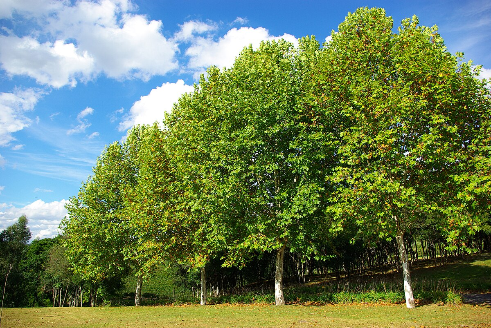

Plátano (Platanus x hispánica)

- Familia: Platanaceae (familia del plátano).
- Tronco: es robusto y puede alcanzar diámetros de hasta 2 metros en árboles maduros. Es recto y leñoso, proporcionando una estructura sólida para el árbol.
- Corteza: es distintiva, con una textura que cambia con la edad. En los árboles jóvenes, la corteza es lisa y de color gris claro, pero con el tiempo se desprende en placas grandes, revelando una corteza interna de color verde a amarillo. Esta exfoliación de la corteza le da un aspecto decorativo.
- Copa: es amplia, extendida y redondeada. Puede alcanzar alturas de entre 20 y 30 metros, proporcionando una sombra extensa. Las ramas crecen en una disposición abierta, lo que permite una penetración de luz moderada a través de la copa.
- Hoja: son grandes, de forma palmeada, con 5 a 7 lóbulos lobulados y bordes dentados. Son de color verde oscuro en verano y cambian a tonos amarillos en otoño. Las hojas pueden alcanzar hasta 25 cm de diámetro.
- Flor: son pequeñas y agrupadas en inflorescencias colgantes de tipo amento o glomérulo. Son de color verde y no tienen un gran atractivo ornamental, pero se agrupan en densos racimos que aparecen en primavera.
- Fruto: es una esfera pequeña y espinosa conocida como "achene" o "bola de plátano". Contiene muchas semillas diminutas que se dispersan por el viento cuando la bola madura y se desintegra. Los frutos maduran en otoño.
- Usos: se cultiva principalmente por su sombra y su atractivo ornamental. Es común en calles urbanas y parques debido a su gran tamaño y su capacidad para proporcionar sombra. La madera del plátano también se utiliza en la fabricación de muebles y en ebanistería. Además, el plátano ayuda en la mejora del aire urbano al capturar polvo y polen.
- Floración: ocurre en primavera, con la producción de inflorescencias densas y colgantes. Aunque las flores no son especialmente vistosas, contribuyen a la formación de los frutos.
- Fructificacion: sigue a la floración, con la formación de esferas espinosas que contienen las semillas. Los frutos maduran en otoño y se dispersan por el viento.
- Reproducción: se reproduce principalmente por semillas. Las esferas maduras se cosechan y se siembran en condiciones adecuadas para germinar. También es posible la reproducción por esquejes o injertos, aunque esto es menos común.
Hoja
Fruto
Semillas